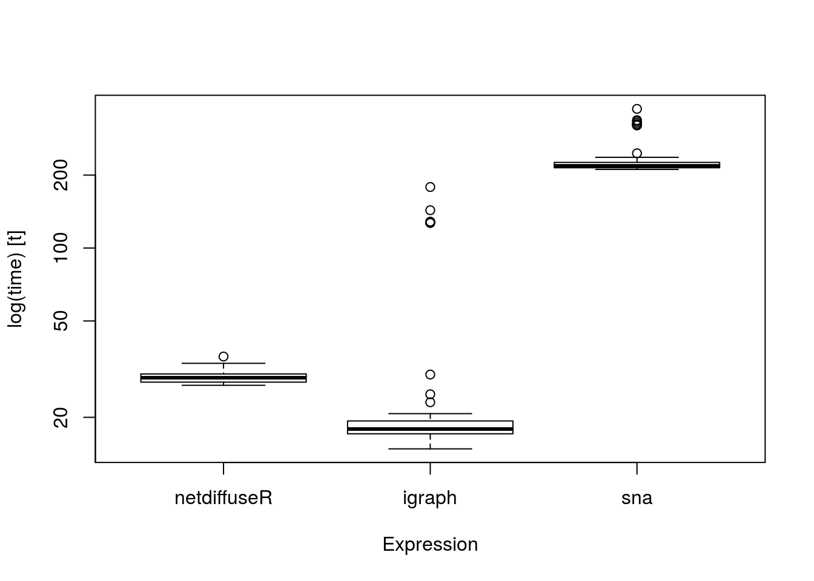

Moran’s I
Moran’s I tests for spatial autocorrelation.
netdiffuseR implements the test in moran, which is suited for sparse matrices.
We can use Moran’s I as a first look to whether there is something happening: let that be influence or homophily.
Using geodesics
One approach is to use the geodesic (shortes path length) matrix to account for indirect influence.
In the case of sparse matrices, and furthermore, in the presence of structural holes it is more convenient to calculate the distance matrix taking this into account.
netdiffuseR has a function to do so, the approx_geodesic function which, using graph powers, computes the shortest path up to n steps. This could be faster (if you only care up to n steps) than igraph or sns:
# Extracting the large adjacency matrix (stacked)
dgc <- diag_expand(medInnovationsDiffNet$graph)
ig <- igraph::graph_from_adjacency_matrix(dgc)
mat <- network::as.network(as.matrix(dgc))
# Measuring times
times <- microbenchmark::microbenchmark(
netdiffuseR = netdiffuseR::approx_geodesic(dgc),
igraph = igraph::distances(ig),
sna = sna::geodist(mat),
times = 50, unit="relative"
)

The summary.diffnet method already runs Moran’s for you. What happens under the hood is:
# For each time point we compute the geodesic distances matrix
W <- approx_geodesic(medInnovationsDiffNet$graph[[1]])
# We get the element-wise inverse
W@x <- 1/W@x
# And then compute moran
moran(medInnovationsDiffNet$cumadopt[,1], W)
# $observed
# [1] 0.06624028
#
# $expected
# [1] -0.008064516
#
# $sd
# [1] 0.03265066
#
# $p.value
# [1] 0.02286087
#
# attr(,"class")
# [1] "diffnet_moran"
Structural dependence and permutation tests
- A novel statistical method (work-in-progress) that allows conducting inference.
- Included in the package, tests whether a particular network statistic actually depends on network structure
- Suitable to be applied to network thresholds (you can’t use thresholds in regression-like models!)
Idea
Let \(\mathcal{G} = (V,E)\) be a graph, \(\gamma\) a vertex attribute, and \(\beta = f(\gamma,\mathcal{G})\), then
\[\gamma \perp \mathcal{G} \implies \mathbb{E}\left[\beta(\gamma,\mathcal{G})|\mathcal{G}\right] = \mathbb{E}\left[\beta(\gamma,\mathcal{G})\right]\]
This is, if for example time of adoption is independent on the structure of the network, then the average threshold level will be independent from the network structure as well.
Another way of looking at this is that the test will allow us to see how probable is to have this combination of network structure and network threshold (if it is uncommon then we say that the diffusion model is highly likely)
Example Not random TOA
- To use this test, netdiffuseR has the
struct_test function.
Basically it simulates networks with the same density and computes a particular statistic every time, generating an EDF (Empirical Distribution Function) under the Null hyphothesis (p-values).
# Simulating network
set.seed(1123)
net <- rdiffnet(n=500, t=10, seed.graph = "small-world")
# Running the test
test <- struct_test(
graph = net,
statistic = function(x) mean(threshold(x), na.rm = TRUE),
R = 1e3,
ncpus=4, parallel="multicore"
)
# See the output
test
#
# Structure dependence test
# # Simulations : 1,000
# # nodes : 500
# # of time periods : 10
# --------------------------------------------------------------------------------
# H0: E[beta(Y,G)|G] - E[beta(Y,G)] = 0 (no structure dependency)
# observed expected p.val
# 0.5521 0.2306 0.0000

Now we shuffle toas, so that is random
# Resetting TOAs (now will be completely random)
diffnet.toa(net) <- sample(diffnet.toa(net), nnodes(net), TRUE)
# Running the test
test <- struct_test(
graph = net,
statistic = function(x) mean(threshold(x), na.rm = TRUE),
R = 1e3,
ncpus=4, parallel="multicore"
)
# See the output
test
#
# Structure dependence test
# # Simulations : 1,000
# # nodes : 500
# # of time periods : 10
# --------------------------------------------------------------------------------
# H0: E[beta(Y,G)|G] - E[beta(Y,G)] = 0 (no structure dependency)
# observed expected p.val
# 0.2579 0.2444 0.3520

Regression analysis
In regression analysis we want to see if exposure, once we control for other covariates, had any effect on the adoption of a behavior.
In general, the big problem here is when we have a latent variable that co-determines both network and behavior.
Unless we can control for such variable, regression analysis will be generically biased.
On the other hand, if you can claim that either such variable doesn’t exists or you actually can control for it, then we have two options: lagged exposure models, or contemporaneous exposure models. We will focus on the former.
Lagged exposure models
In this type of models we usually have the following
\[
y_t = f(W_{t-1}, y_{t-1}, X_i) + \varepsilon
\]
Furthermore, in the case of adoption we have
\[
y_{it} = \left\{
\begin{array}{ll}
1 & \mbox{if}\quad \rho\sum_{j\neq i}\frac{W_{ijt-1}y_{it-1}}{\sum_{j\neq i}W_{ijt-1}} + X_{it}\beta > 0\\
0 & \mbox{otherwise}
\end{array}
\right.
\]
In netdiffuseR is as easy as doing the following:
# fakedata
set.seed(121)
W <- rgraph_ws(1e3, 8, .2)
X <- cbind(var1 = rnorm(1e3))
toa <- sample(c(NA,1:5), 1e3, TRUE)
dn <- new_diffnet(W, toa=toa, vertex.static.attrs = X)
# Warning in new_diffnet(W, toa = toa, vertex.static.attrs = X): -graph- is
# static and will be recycled (see ?new_diffnet).
# Computing exposure and adoption for regression
dn[["cohesive_expo"]] <- cbind(NA, exposure(dn)[,-nslices(dn)])
dn[["adopt"]] <- dn$cumadopt
# Generating the data and running the model
dat <- as.data.frame(dn)
ans <- glm(adopt ~ cohesive_expo + var1 + factor(per),
data = dat,
family = binomial(link="probit"),
subset = is.na(toa) | (per <= toa))
summary(ans)
#
# Call:
# glm(formula = adopt ~ cohesive_expo + var1 + factor(per), family = binomial(link = "probit"),
# data = dat, subset = is.na(toa) | (per <= toa))
#
# Deviance Residuals:
# Min 1Q Median 3Q Max
# -1.2642 -0.7733 -0.6897 1.1760 1.8765
#
# Coefficients:
# Estimate Std. Error z value Pr(>|z|)
# (Intercept) -0.78483 0.05599 -14.017 < 2e-16 ***
# cohesive_expo -0.27234 0.17956 -1.517 0.1293
# var1 0.01086 0.02650 0.410 0.6820
# factor(per)3 0.18299 0.07832 2.336 0.0195 *
# factor(per)4 0.50352 0.09578 5.257 1.46e-07 ***
# factor(per)5 0.97279 0.12412 7.837 4.60e-15 ***
# ---
# Signif. codes: 0 '***' 0.001 '**' 0.01 '*' 0.05 '.' 0.1 ' ' 1
#
# (Dispersion parameter for binomial family taken to be 1)
#
# Null deviance: 2838.3 on 2365 degrees of freedom
# Residual deviance: 2723.6 on 2360 degrees of freedom
# (1000 observations deleted due to missingness)
# AIC: 2735.6
#
# Number of Fisher Scoring iterations: 4
Contemporaneous exposure models
Similar to he lagged exposure models, we usually have the following
\[
y_t = f(W_t, y_t, X_t) + \varepsilon
\]
Furthermore, in the case of adoption we have
\[
y_{it} = \left\{
\begin{array}{ll}
1 & \mbox{if}\quad \rho\sum_{j\neq i}\frac{W_{ijt}y_{it}}{\sum_{j\neq i}W_{ijt}} + X_{it}\beta > 0\\
0 & \mbox{otherwise}
\end{array}
\right.
\]
Unfortunately, since \(y_t\) is in both sides of the equation, this models cannot be fitted using a standard probit or logit regression.
Two alternatives to solve this:
Using Instrumental Variables Probit (ivprobit in both R and Stata)
Use a Spatial Autoregressive (SAR) Probit (SpatialProbit and ProbitSpatial in R).
We won’t cover these here.
Problems
Using the dataset problems_stats1.rda
Compute a lagged version of Moran’s I and compare it with the one from summary.
Fit the following probit model \(adopt = Exposure*\gamma + Measure*\beta + \varepsilon\). What happens if you exclude the time fixed effects?
LS0tCnRpdGxlOiAiU3RhdGlzdGljYWwgaW5mZXJlbmNlIgphdXRob3I6ICJUaG9tYXMgVy4gVmFsZW50ZSBhbmQgR2VvcmdlIEcuIFZlZ2EgWW9uIgotLS0KCmBgYHtyIHNldHVwLCBlY2hvPUZBTFNFLCBtZXNzYWdlPUZBTFNFLCB3YXJuaW5nPUZBTFNFfQpsaWJyYXJ5KG5ldGRpZmZ1c2VSKQprbml0cjo6b3B0c19jaHVuayRzZXQoY29tbWVudCA9ICIjIikKCmBgYAoKIyBNb3JhbidzIEkKCiogICBNb3JhbidzIEkgdGVzdHMgZm9yIHNwYXRpYWwgYXV0b2NvcnJlbGF0aW9uLgogICAgCiogICBfX25ldGRpZmZ1c2VSX18gaW1wbGVtZW50cyB0aGUgdGVzdCBpbiBgbW9yYW5gLCB3aGljaCBpcyBzdWl0ZWQgZm9yIHNwYXJzZSBtYXRyaWNlcy4KCiogICBXZSBjYW4gdXNlIE1vcmFuJ3MgSSBhcyBhIGZpcnN0IGxvb2sgdG8gd2hldGhlciB0aGVyZSBpcyBzb21ldGhpbmcgaGFwcGVuaW5nOgogICAgbGV0IHRoYXQgYmUgaW5mbHVlbmNlIG9yIGhvbW9waGlseS4KCiMjIFVzaW5nIGdlb2Rlc2ljcwoKKiAgIE9uZSBhcHByb2FjaCBpcyB0byB1c2UgdGhlIGdlb2Rlc2ljIChzaG9ydGVzIHBhdGggbGVuZ3RoKSBtYXRyaXggdG8gYWNjb3VudCBmb3IgaW5kaXJlY3QKICAgIGluZmx1ZW5jZS4KICAgIAoqICAgSW4gdGhlIGNhc2Ugb2Ygc3BhcnNlIG1hdHJpY2VzLCBhbmQgZnVydGhlcm1vcmUsIGluIHRoZSBwcmVzZW5jZSBvZiBzdHJ1Y3R1cmFsIGhvbGVzCiAgICBpdCBpcyBtb3JlIGNvbnZlbmllbnQgdG8gY2FsY3VsYXRlIHRoZSBkaXN0YW5jZSBtYXRyaXggdGFraW5nIHRoaXMgaW50byBhY2NvdW50LgogICAgCiogICBfX25ldGRpZmZ1c2VSX18gaGFzIGEgZnVuY3Rpb24gdG8gZG8gc28sIHRoZSBgYXBwcm94X2dlb2Rlc2ljYCBmdW5jdGlvbiB3aGljaCwKICAgIHVzaW5nIGdyYXBoIHBvd2VycywgY29tcHV0ZXMgdGhlIHNob3J0ZXN0IHBhdGggdXAgdG8gYG5gIHN0ZXBzLiBUaGlzIGNvdWxkIGJlCiAgICBmYXN0ZXIgKGlmIHlvdSBvbmx5IGNhcmUgdXAgdG8gYG5gIHN0ZXBzKSB0aGFuIGBpZ3JhcGhgIG9yIGBzbnNgOgoKICAgIGBgYHtyIGdlb2Rlc2ljX3NwZWVkLCBjYWNoZT1UUlVFfQogICAgIyBFeHRyYWN0aW5nIHRoZSBsYXJnZSBhZGphY2VuY3kgbWF0cml4IChzdGFja2VkKQogICAgZGdjIDwtIGRpYWdfZXhwYW5kKG1lZElubm92YXRpb25zRGlmZk5ldCRncmFwaCkKICAgIGlnICA8LSBpZ3JhcGg6OmdyYXBoX2Zyb21fYWRqYWNlbmN5X21hdHJpeChkZ2MpCiAgICBtYXQgPC0gbmV0d29yazo6YXMubmV0d29yayhhcy5tYXRyaXgoZGdjKSkKICAgIAogICAgIyBNZWFzdXJpbmcgdGltZXMKICAgIHRpbWVzIDwtIG1pY3JvYmVuY2htYXJrOjptaWNyb2JlbmNobWFyaygKICAgICAgbmV0ZGlmZnVzZVIgPSBuZXRkaWZmdXNlUjo6YXBwcm94X2dlb2Rlc2ljKGRnYyksCiAgICAgIGlncmFwaCA9IGlncmFwaDo6ZGlzdGFuY2VzKGlnKSwKICAgICAgc25hID0gc25hOjpnZW9kaXN0KG1hdCksCiAgICAgIHRpbWVzID0gNTAsIHVuaXQ9InJlbGF0aXZlIgogICAgKQogICAgYGBgCiAgICAKICAgIGBgYHtyIGdlb2Rlc2ljX3NwZWVkLWJveCwgYXV0b2RlcD1UUlVFLCBlY2hvPUZBTFNFfQogICAgbWljcm9iZW5jaG1hcms6Ojpib3hwbG90Lm1pY3JvYmVuY2htYXJrKHRpbWVzKQogICAgYGBgCgoqICAgVGhlIGBzdW1tYXJ5LmRpZmZuZXRgIG1ldGhvZCBhbHJlYWR5IHJ1bnMgTW9yYW4ncyBmb3IgeW91LiBXaGF0IGhhcHBlbnMgdW5kZXIgdGhlIGhvb2QgaXM6CiAgICAKICAgIGBgYHtyfQogICAgIyBGb3IgZWFjaCB0aW1lIHBvaW50IHdlIGNvbXB1dGUgdGhlIGdlb2Rlc2ljIGRpc3RhbmNlcyBtYXRyaXgKICAgIFcgPC0gYXBwcm94X2dlb2Rlc2ljKG1lZElubm92YXRpb25zRGlmZk5ldCRncmFwaFtbMV1dKQogICAgCiAgICAjIFdlIGdldCB0aGUgZWxlbWVudC13aXNlIGludmVyc2UKICAgIFdAeCA8LSAxL1dAeAogICAgCiAgICAjIEFuZCB0aGVuIGNvbXB1dGUgbW9yYW4KICAgIG1vcmFuKG1lZElubm92YXRpb25zRGlmZk5ldCRjdW1hZG9wdFssMV0sIFcpCiAgICBgYGAKCgoKIyBTdHJ1Y3R1cmFsIGRlcGVuZGVuY2UgYW5kIHBlcm11dGF0aW9uIHRlc3RzCgoKLSBBIG5vdmVsIHN0YXRpc3RpY2FsIG1ldGhvZCAod29yay1pbi1wcm9ncmVzcykgdGhhdCBhbGxvd3MgY29uZHVjdGluZyBpbmZlcmVuY2UuCi0gSW5jbHVkZWQgaW4gdGhlIHBhY2thZ2UsIHRlc3RzIHdoZXRoZXIgYSBwYXJ0aWN1bGFyIG5ldHdvcmsgc3RhdGlzdGljIGFjdHVhbGx5IGRlcGVuZHMgb24gbmV0d29yayBzdHJ1Y3R1cmUKLSBTdWl0YWJsZSB0byBiZSBhcHBsaWVkIHRvIG5ldHdvcmsgdGhyZXNob2xkcyAoeW91IGNhbid0IHVzZSB0aHJlc2hvbGRzIGluIHJlZ3Jlc3Npb24tbGlrZSBtb2RlbHMhKQoKIyMgSWRlYQoKLSAgIExldCAkXG1hdGhjYWx7R30gPSAoVixFKSQgYmUgYSBncmFwaCwgJFxnYW1tYSQgYSB2ZXJ0ZXggYXR0cmlidXRlLCBhbmQgJFxiZXRhID0gZihcZ2FtbWEsXG1hdGhjYWx7R30pJCwgdGhlbgoKICAgICQkXGdhbW1hIFxwZXJwIFxtYXRoY2Fse0d9IFxpbXBsaWVzIFxtYXRoYmJ7RX1cbGVmdFtcYmV0YShcZ2FtbWEsXG1hdGhjYWx7R30pfFxtYXRoY2Fse0d9XHJpZ2h0XSA9IFxtYXRoYmJ7RX1cbGVmdFtcYmV0YShcZ2FtbWEsXG1hdGhjYWx7R30pXHJpZ2h0XSQkCgotIFRoaXMgaXMsIGlmIGZvciBleGFtcGxlIHRpbWUgb2YgYWRvcHRpb24gaXMgaW5kZXBlbmRlbnQgb24gdGhlIHN0cnVjdHVyZSBvZiB0aGUgbmV0d29yaywgdGhlbiB0aGUgYXZlcmFnZSB0aHJlc2hvbGQgbGV2ZWwgd2lsbCBiZSBpbmRlcGVuZGVudCBmcm9tIHRoZSBuZXR3b3JrIHN0cnVjdHVyZSBhcyB3ZWxsLgoKLSBBbm90aGVyIHdheSBvZiBsb29raW5nIGF0IHRoaXMgaXMgdGhhdCB0aGUgdGVzdCB3aWxsIGFsbG93IHVzIHRvIHNlZSBob3cgcHJvYmFibGUgaXMgdG8gaGF2ZSB0aGlzIGNvbWJpbmF0aW9uIG9mIG5ldHdvcmsgc3RydWN0dXJlIGFuZCBuZXR3b3JrIHRocmVzaG9sZCAoaWYgaXQgaXMgdW5jb21tb24gdGhlbiB3ZSBzYXkgdGhhdCB0aGUgZGlmZnVzaW9uIG1vZGVsIGlzIGhpZ2hseSBsaWtlbHkpCgoKIyMgRXhhbXBsZSBOb3QgcmFuZG9tIFRPQQoKLSAgICAgVG8gdXNlIHRoaXMgdGVzdCwgX19uZXRkaWZmdXNlUl9fIGhhcyB0aGUgYHN0cnVjdF90ZXN0YCBmdW5jdGlvbi4KLSAgICAgQmFzaWNhbGx5IGl0IHNpbXVsYXRlcyBuZXR3b3JrcyB3aXRoIHRoZSBzYW1lIGRlbnNpdHkgYW5kIGNvbXB1dGVzIGEgcGFydGljdWxhciBzdGF0aXN0aWMgZXZlcnkgdGltZSwgZ2VuZXJhdGluZyBhbiBFREYgKEVtcGlyaWNhbCBEaXN0cmlidXRpb24gRnVuY3Rpb24pIHVuZGVyIHRoZSBOdWxsIGh5cGhvdGhlc2lzIChwLXZhbHVlcykuCiAgICAKICAgIGBgYHtyIFN0cnVjdCBub24tcmFuZG9tLXRvYSwgY2FjaGU9VFJVRX0KICAgICMgU2ltdWxhdGluZyBuZXR3b3JrCiAgICBzZXQuc2VlZCgxMTIzKQogICAgbmV0IDwtIHJkaWZmbmV0KG49NTAwLCB0PTEwLCBzZWVkLmdyYXBoID0gInNtYWxsLXdvcmxkIikKICAgIAogICAgIyBSdW5uaW5nIHRoZSB0ZXN0CiAgICB0ZXN0IDwtIHN0cnVjdF90ZXN0KAogICAgICBncmFwaCAgICAgPSBuZXQsIAogICAgICBzdGF0aXN0aWMgPSBmdW5jdGlvbih4KSBtZWFuKHRocmVzaG9sZCh4KSwgbmEucm0gPSBUUlVFKSwKICAgICAgUiAgICAgICAgID0gMWUzLAogICAgICBuY3B1cz00LCBwYXJhbGxlbD0ibXVsdGljb3JlIgogICAgICApCiAgICAKICAgICMgU2VlIHRoZSBvdXRwdXQKICAgIHRlc3QKICAgIGBgYAoKYGBge3IsIGVjaG89RkFMU0V9Cmhpc3QodGVzdCkKYGBgCgotICAgTm93IHdlIHNodWZmbGUgdG9hcywgc28gdGhhdCBpcyByYW5kb20KICAgIAogICAgYGBge3IgcmFuZG9tLXRvYSwgY2FjaGU9VFJVRX0KICAgICMgUmVzZXR0aW5nIFRPQXMgKG5vdyB3aWxsIGJlIGNvbXBsZXRlbHkgcmFuZG9tKQogICAgZGlmZm5ldC50b2EobmV0KSA8LSBzYW1wbGUoZGlmZm5ldC50b2EobmV0KSwgbm5vZGVzKG5ldCksIFRSVUUpCiAgICAKICAgICMgUnVubmluZyB0aGUgdGVzdAogICAgdGVzdCA8LSBzdHJ1Y3RfdGVzdCgKICAgICAgZ3JhcGggICAgID0gbmV0LCAKICAgICAgc3RhdGlzdGljID0gZnVuY3Rpb24oeCkgbWVhbih0aHJlc2hvbGQoeCksIG5hLnJtID0gVFJVRSksCiAgICAgIFIgICAgICAgICA9IDFlMywKICAgICAgbmNwdXM9NCwgcGFyYWxsZWw9Im11bHRpY29yZSIKICAgICAgKQogICAgCiAgICAjIFNlZSB0aGUgb3V0cHV0CiAgICB0ZXN0CiAgICBgYGAKICAgIAogICAgYGBge3IsIGVjaG89RkFMU0V9CiAgICBoaXN0KHRlc3QpCiAgICBgYGAKCiMgUmVncmVzc2lvbiBhbmFseXNpcwoKKiAgIEluIHJlZ3Jlc3Npb24gYW5hbHlzaXMgd2Ugd2FudCB0byBzZWUgaWYgZXhwb3N1cmUsIG9uY2Ugd2UgY29udHJvbCBmb3Igb3RoZXIKICAgIGNvdmFyaWF0ZXMsIGhhZCBhbnkgZWZmZWN0IG9uIHRoZSBhZG9wdGlvbiBvZiBhIGJlaGF2aW9yLgoKKiAgIEluIGdlbmVyYWwsIHRoZSBiaWcgcHJvYmxlbSBoZXJlIGlzIHdoZW4gd2UgaGF2ZSBhIGxhdGVudCB2YXJpYWJsZSB0aGF0IAogICAgY28tZGV0ZXJtaW5lcyBib3RoIG5ldHdvcmsgYW5kIGJlaGF2aW9yLgogICAgCiogICBVbmxlc3Mgd2UgY2FuIGNvbnRyb2wgZm9yIHN1Y2ggdmFyaWFibGUsIHJlZ3Jlc3Npb24gYW5hbHlzaXMgd2lsbCBiZQogICAgZ2VuZXJpY2FsbHkgYmlhc2VkLgogICAgCiogICBPbiB0aGUgb3RoZXIgaGFuZCwgaWYgeW91IGNhbiBjbGFpbSB0aGF0IGVpdGhlciBzdWNoIHZhcmlhYmxlIGRvZXNuJ3QgZXhpc3RzCiAgICBvciB5b3UgYWN0dWFsbHkgY2FuIGNvbnRyb2wgZm9yIGl0LCB0aGVuIHdlIGhhdmUgdHdvIG9wdGlvbnM6IGxhZ2dlZCBleHBvc3VyZQogICAgbW9kZWxzLCBvciBjb250ZW1wb3JhbmVvdXMgZXhwb3N1cmUgbW9kZWxzLiBXZSB3aWxsIGZvY3VzIG9uIHRoZSBmb3JtZXIuCgoKIyMgTGFnZ2VkIGV4cG9zdXJlIG1vZGVscwoKKiAgIEluIHRoaXMgdHlwZSBvZiBtb2RlbHMgd2UgdXN1YWxseSBoYXZlIHRoZSBmb2xsb3dpbmcKCiAgICAkJAogICAgeV90ID0gZihXX3t0LTF9LCB5X3t0LTF9LCBYX2kpICsgXHZhcmVwc2lsb24KICAgICQkCiAgICAKICAgIEZ1cnRoZXJtb3JlLCBpbiB0aGUgY2FzZSBvZiBhZG9wdGlvbiB3ZSBoYXZlCiAgICAKICAgICQkCiAgICB5X3tpdH0gPSBcbGVmdFx7CiAgICBcYmVnaW57YXJyYXl9e2xsfQogICAgMSAmIFxtYm94e2lmfVxxdWFkIFxyaG9cc3VtX3tqXG5lcSBpfVxmcmFje1dfe2lqdC0xfXlfe2l0LTF9fXtcc3VtX3tqXG5lcSBpfVdfe2lqdC0xfX0gKyBYX3tpdH1cYmV0YSA+IDBcXAogICAgMCAmIFxtYm94e290aGVyd2lzZX0KICAgIFxlbmR7YXJyYXl9CiAgICBccmlnaHQuCiAgICAkJAogICAgCiogICBJbiBuZXRkaWZmdXNlUiBpcyBhcyBlYXN5IGFzIGRvaW5nIHRoZSBmb2xsb3dpbmc6CiAgICAKICAgIGBgYHtyIGRhdGFmb3JyZWd9CiAgICAjIGZha2VkYXRhCiAgICBzZXQuc2VlZCgxMjEpCiAgICAKICAgIFcgICA8LSByZ3JhcGhfd3MoMWUzLCA4LCAuMikKICAgIFggICA8LSBjYmluZCh2YXIxID0gcm5vcm0oMWUzKSkKICAgIHRvYSA8LSBzYW1wbGUoYyhOQSwxOjUpLCAxZTMsIFRSVUUpCiAgICAKICAgIGRuICA8LSBuZXdfZGlmZm5ldChXLCB0b2E9dG9hLCB2ZXJ0ZXguc3RhdGljLmF0dHJzID0gWCkKICAgIAogICAgIyBDb21wdXRpbmcgZXhwb3N1cmUgYW5kIGFkb3B0aW9uIGZvciByZWdyZXNzaW9uCiAgICBkbltbImNvaGVzaXZlX2V4cG8iXV0gPC0gY2JpbmQoTkEsIGV4cG9zdXJlKGRuKVssLW5zbGljZXMoZG4pXSkKICAgIGRuW1siYWRvcHQiXV0gICAgICAgICA8LSBkbiRjdW1hZG9wdAoKICAgIAogICAgIyBHZW5lcmF0aW5nIHRoZSBkYXRhIGFuZCBydW5uaW5nIHRoZSBtb2RlbAogICAgZGF0IDwtIGFzLmRhdGEuZnJhbWUoZG4pCiAgICBhbnMgPC0gZ2xtKGFkb3B0IH4gY29oZXNpdmVfZXhwbyArIHZhcjEgKyBmYWN0b3IocGVyKSwKICAgICAgICAgICAgICAgZGF0YSA9IGRhdCwKICAgICAgICAgICAgICAgZmFtaWx5ID0gYmlub21pYWwobGluaz0icHJvYml0IiksCiAgICAgICAgICAgICAgIHN1YnNldCA9IGlzLm5hKHRvYSkgfCAocGVyIDw9IHRvYSkpCiAgICBzdW1tYXJ5KGFucykKICAgIGBgYAoKIyMgQ29udGVtcG9yYW5lb3VzIGV4cG9zdXJlIG1vZGVscwoKKiAgIFNpbWlsYXIgdG8gaGUgbGFnZ2VkIGV4cG9zdXJlIG1vZGVscywgd2UgdXN1YWxseSBoYXZlIHRoZSBmb2xsb3dpbmcKCiAgICAkJAogICAgeV90ID0gZihXX3QsIHlfdCwgWF90KSArIFx2YXJlcHNpbG9uCiAgICAkJAogICAgCiAgICBGdXJ0aGVybW9yZSwgaW4gdGhlIGNhc2Ugb2YgYWRvcHRpb24gd2UgaGF2ZQogICAgCiAgICAkJAogICAgeV97aXR9ID0gXGxlZnRcewogICAgXGJlZ2lue2FycmF5fXtsbH0KICAgIDEgJiBcbWJveHtpZn1ccXVhZCBccmhvXHN1bV97alxuZXEgaX1cZnJhY3tXX3tpanR9eV97aXR9fXtcc3VtX3tqXG5lcSBpfVdfe2lqdH19ICsgWF97aXR9XGJldGEgPiAwXFwKICAgIDAgJiBcbWJveHtvdGhlcndpc2V9CiAgICBcZW5ke2FycmF5fQogICAgXHJpZ2h0LgogICAgJCQKICAgIAoqICAgVW5mb3J0dW5hdGVseSwgc2luY2UgJHlfdCQgaXMgaW4gYm90aCBzaWRlcyBvZiB0aGUgZXF1YXRpb24sIHRoaXMgbW9kZWxzIGNhbm5vdAogICAgYmUgZml0dGVkIHVzaW5nIGEgc3RhbmRhcmQgcHJvYml0IG9yIGxvZ2l0IHJlZ3Jlc3Npb24uCiAgICAKKiAgIFR3byBhbHRlcm5hdGl2ZXMgdG8gc29sdmUgdGhpczoKICAgIAogICAgYS4gIFVzaW5nIEluc3RydW1lbnRhbCBWYXJpYWJsZXMgUHJvYml0IChpdnByb2JpdCBpbiBib3RoIFIgYW5kIFN0YXRhKQogICAgCiAgICBiLiAgVXNlIGEgU3BhdGlhbCBBdXRvcmVncmVzc2l2ZSAoU0FSKSBQcm9iaXQgKFNwYXRpYWxQcm9iaXQgYW5kIFByb2JpdFNwYXRpYWwgaW4gUikuCiAgICAKKiAgIFdlIHdvbid0IGNvdmVyIHRoZXNlIGhlcmUuCgojIFByb2JsZW1zCgpVc2luZyB0aGUgZGF0YXNldCBgcHJvYmxlbXNfc3RhdHMxLnJkYWAKCjEuICBDb21wdXRlIGEgbGFnZ2VkIHZlcnNpb24gb2YgTW9yYW4ncyBJIGFuZCBjb21wYXJlIGl0IHdpdGggdGhlIG9uZSBmcm9tIGBzdW1tYXJ5YC4KCjIuICBGaXQgdGhlIGZvbGxvd2luZyBwcm9iaXQgbW9kZWwgJGFkb3B0ID0gRXhwb3N1cmUqXGdhbW1hICsgTWVhc3VyZSpcYmV0YSArIFx2YXJlcHNpbG9uJC4KICAgIFdoYXQgaGFwcGVucyBpZiB5b3UgZXhjbHVkZSB0aGUgdGltZSBmaXhlZCBlZmZlY3RzPwoKCmBgYHtyIGRhdGFnZW4sIGVjaG89RkFMU0UsIGNhY2hlPVRSVUV9CnNldC5zZWVkKDEpCgpuIDwtIDUwMApucGVyIDwtIDUKWCA8LSBjYmluZChNZWFzdXJlPXJub3JtKG4pKQp5IDwtIGNiaW5kKHNhbXBsZShjKDAsIDEpLCBuLCBUUlVFLCBwcm9iID0gYyguOSwgLjEpKSkKCgojIEJhc2VsaW5lIG5ldHdvcmsKVyA8LSAocmdyYXBoX3dzKG4sIGs9OCwgcCA9IC4yKSkKCnNpbV9zcGFjZSA8LSBmdW5jdGlvbihXLCB5LCBYLCBwZXJzID0gNCwgbGFnID0gRkFMU0UsIHJobyA9IC4yLCBiZXRhPS41KSB7CiAgVyA8LSBhcy5tYXRyaXgoVykKICBXIDwtIFcvKHJvd1N1bXMoVykgKyAxZS0yMCkKICBuIDwtIG5yb3coVykKICBmb3IgKGkgaW4gMTpwZXJzKSB7CiAgICBpZiAoIWxhZykKICAgICAgeW5ldyA8LSAoc29sdmUoZGlhZyhuKSAtIHJobypXKSAlKiUgKFgqYmV0YSkgKyBybm9ybShuKSkgPiAwCiAgICBlbHNlCiAgICAgIHluZXcgPC0gKHJobyAqIChXICUqJSB5WyxpIC0gYXMuaW50ZWdlcihpICE9IDEpLGRyb3A9RkFMU0VdKSArIGJldGEqWCArIHJub3JtKG4pKSA+IDAKICAgIAogICAgeSA8LSBjYmluZCh5LCBpZmVsc2UoCiAgICAgIHlbLGkgLSBhcy5pbnRlZ2VyKGkgIT0gMSksZHJvcD1GQUxTRV0gPT0gMSwKICAgICAgeVssaSAtIGFzLmludGVnZXIoaSAhPSAxKSxkcm9wPUZBTFNFXSwgCiAgICAgIHluZXcpCiAgICAgICkKICB9CiAgCiAgeQp9CgphbnMgPC0gc2ltX3NwYWNlKFcsIHksIFgsIHBlcnMgPSBucGVyLCBsYWc9VFJVRSkKdG9hIDwtIG5jb2woYW5zKSAtIGFwcGx5KGFucywgMSwgc3VtKQpYIDwtIGNiaW5kKFgsIHRvYT1pZmVsc2UodG9hID09IDAsIE5BLCB0b2EpKQoKc2F2ZShYLCBXLCBmaWxlPSJwcm9ibGVtc19zdGF0czEucmRhIikKYGBgCgpgYGB7ciBzb2wsIGV2YWw9RkFMU0UsIGVjaG89RkFMU0V9CiMgb3V0IDwtIHN0cnVjdF90ZXN0KAojICAgbmV3X2RpZmZuZXQoVywgWFssInRvYSJdKSwKIyAgIGZ1bmN0aW9uKGcpIG1lYW4odGhyZXNob2xkKGcsIGxhZ3MgPSAxTCksIG5hLnJtPVRSVUUpLAojICAgUj01MDAsCiMgICByZXdpcmUuYXJncyA9IGxpc3QoYWxnb3JpdGhtPSJxYXAiKSwKIyAgIHBhcmFsbGVsPSJtdWx0aWNvcmUiLG5jcHVzPTUpO291dAoKbG9hZCgicHJvYmxlbXNfc3RhdHMxLnJkYSIpCmRuIDwtIG5ld19kaWZmbmV0KFcsIHRvYT1YWywyXSwgdmVydGV4LnN0YXRpYy5hdHRycyA9IFhbLDEsZHJvcD1GQUxTRV0pCgpkbltbImNvaGVzaXZlX2V4cG9zdXJlIl1dIDwtIGNiaW5kKE5BLCBleHBvc3VyZShkbilbLC1uc2xpY2VzKGRuKV0pCmRuW1siYWRvcHRlZCJdXSAgICAgICAgICAgPC0gZG4kY3VtYWRvcHQKCmRhdCA8LSBhcy5kYXRhLmZyYW1lKGRuKQphbnMgPC0gZ2xtKGFkb3B0ZWQgfiBjb2hlc2l2ZV9leHBvc3VyZSArIE1lYXN1cmUgKyBmYWN0b3IocGVyKSwKICAgICAgICAgICBmYW1pbHkgPSBiaW5vbWlhbChsaW5rPSJwcm9iaXQiKSwKICAgICAgICAgICBkYXRhID0gZGF0LAogICAgICAgICAgIHN1YnNldCA9IGlzLm5hKHRvYSkgfCAocGVyIDw9IHRvYSkKICAgICAgICAgICApCgpzdW1tYXJ5KGFucykKYGBgCgo=
University of Southern California
Center for Applied Network Analysis (CANA)